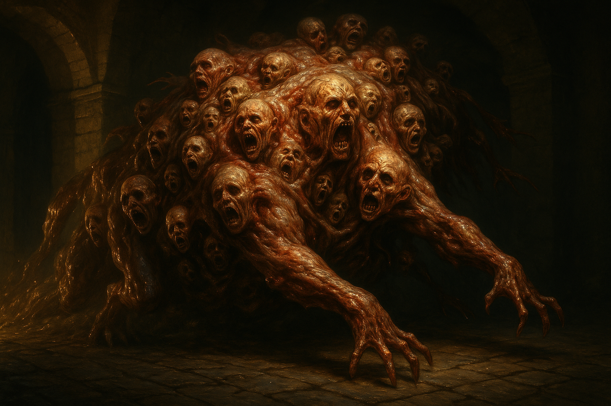

Chakota
Abilities
- Massive size
- Can squeeze through tunnel corridors
- Folds itself around victims
- Sanity-shattering appearance
Weaknesses
- Vulnerable to fire and explosives
Description
A massive flesh-construct assembled from fused human remains — a grotesque amalgamation of bodies melded into a single living mass. Dr. Carreau described it as an “embryonic choir made of perfected flesh” with “nutritional and harmonic” needs. The Chakota was large enough to fill tunnel corridors, yet capable of squeezing through constricted passages. It attacked by folding itself around victims, engulfing them in its mass.
The Chakota was fed on the failures from Carreau’s surgical experiments. Children whose bodies collapsed under the strain of steel rod insertion and occult procedures were rendered into “nutrient substrate” to sustain the creature’s growth.
Behaviour
The Chakota occupied the tunnels beneath the Silkweavers’ Guild, kept as the Lyon cell’s ultimate weapon. When unleashed, it pursued prey through the tunnel system, compressing its bulk through narrow passages. Its appearance was devastating to human sanity — direct visual contact could shatter a mind entirely.
Statistics (CoC 7e)
[!info] Keeper Only No detailed stat block was provided during play. Derive stats from the source scenario prep. The Chakota should have very high STR, CON, and SIZ, with correspondingly high HP. Its primary attack is engulfment (folding itself around victims). Its SAN loss should be severe — direct confrontation caused immediate insanity in play.
Campaign Encounters
Silkweavers’ Guild Tunnels — Death of Marina Garrick (Chapter 2)
During the Silkweavers_Guild_Assault, the Chakota was unleashed in the tunnels beneath the Guild. The party retreated before it. Moreau’s veterans fell back and prepared a volley.
Marina waited at a corner with lantern oil and matches. When the Chakota rounded the corner, Marina’s mind shattered — she attacked Moreau, who spun her into the creature’s mass. Marina detonated herself with oil and gunpowder, killing both herself and the Chakota. Body parts and ichor sprayed the tunnel walls.
Marina’s sacrifice destroyed the creature and saved the surviving party members.
Relationships
- Created by Doctor Emile Carreau — Constructed by Carreau from fused human remains — fed on the rendered failures of his surgical experiments
- Related to Ciimba Children — The ciimba are the 'successes' of Carreau's experiments; the Chakota is fed by the failures, rendered into nutrient substrate
- Serves Mathilde Savarin — Kept beneath the Silkweavers' Guild as the Lyon cell's most terrible weapon